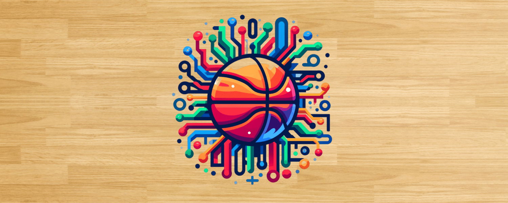
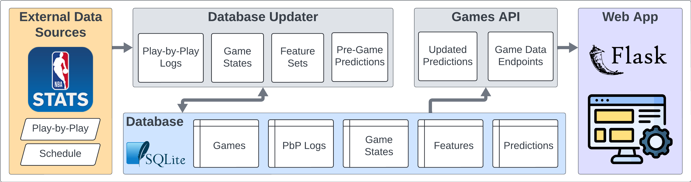
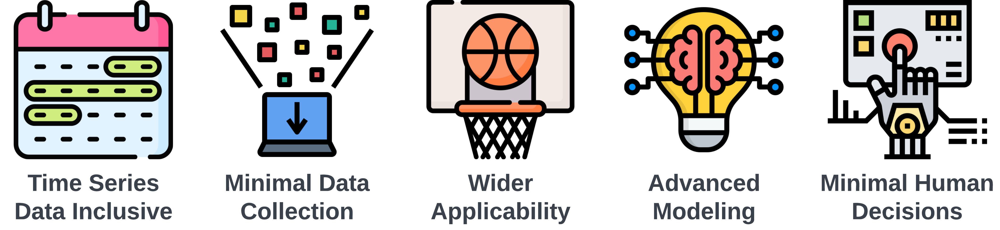
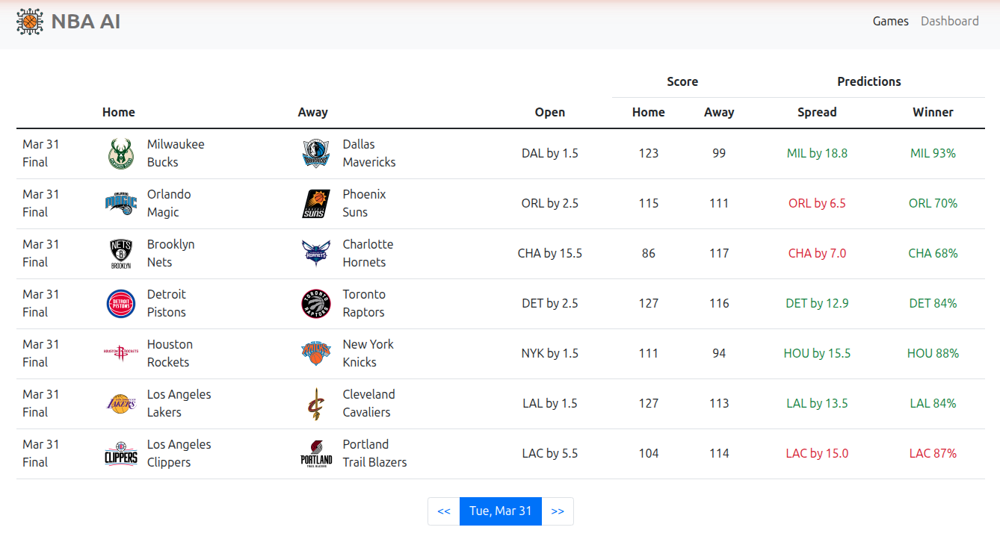
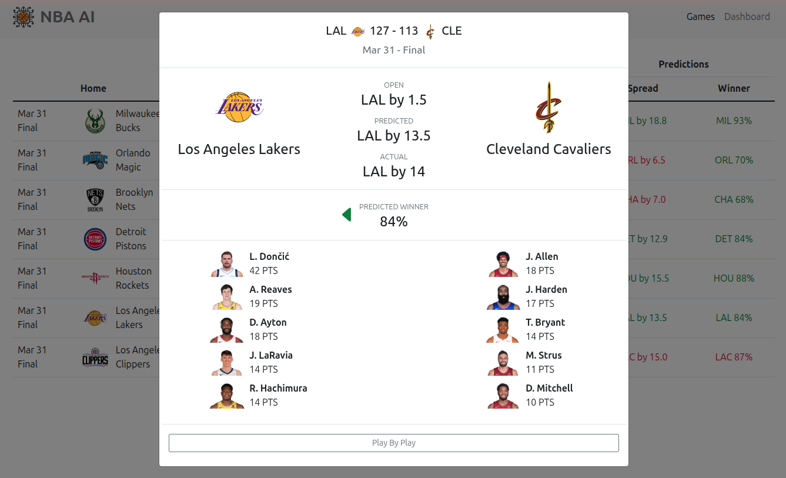
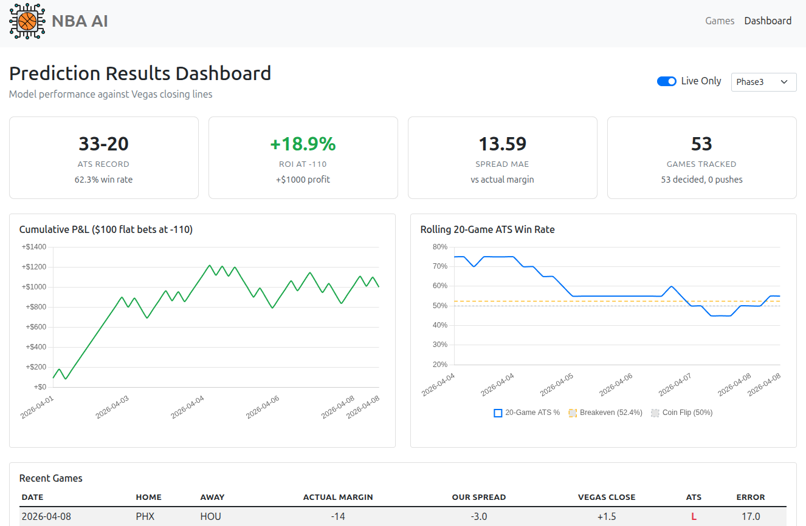

Using AI to predict the outcomes of NBA games.
This project predicts NBA game spreads and winners using a combination of deep learning models and traditional ML. Unlike my previous project, NBA Betting, which focused on extensive data collection and feature engineering, this project focuses on building advanced prediction models that learn directly from play-by-play data, box scores, and player tracking — minimizing manual feature engineering in favor of letting the models find the signal.
The system runs a fully automated daily pipeline that collects game data, updates player ability models, and generates pre-game predictions for all upcoming games using multiple prediction engines. A Flask web app displays predictions alongside Vegas opening lines, with a dashboard for tracking model performance over time.
The system has three main layers:





The system runs multiple prediction engines, each taking a different approach to predicting game spreads and winners. All engines generate pre-game predictions that are evaluated against Vegas closing lines.
git clone https://github.com/NBA-Betting/NBA_AI.git
cd NBA_AI
python -m venv venv
source venv/bin/activate # Windows: venv\Scripts\activate
pip install -r requirements.txt
cp .env.example .env
Download NBA_AI_starter.sqlite.gz from
GitHub Releases
into the project root, then extract it:
python -c "import gzip, shutil; shutil.copyfileobj(gzip.open('NBA_AI_starter.sqlite.gz','rb'), open('data/NBA_AI_starter.sqlite','wb'))"
The starter database contains the current season's games, box scores,
play-by-play, betting lines, injury reports, and predictions from all
models. The .env file is already configured to use it.
python start_app.py
Visit http://localhost:5000 to view games and
predictions. The dashboard is at /dashboard.
The web app shows whatever is in the database. With a fresh starter DB, you'll see the full season up to the date it was exported.
The web app does not fetch new data on its own. To collect games that have occurred since the starter database was exported, run the pipeline:
python -m src.pipeline.orchestrator --mode=full --season=CurrentNote: On first run, the pipeline will backfill any missing games since the starter DB was exported. This involves many API calls with rate-limit pauses and may take 10–30+ minutes depending on the gap. Subsequent runs complete in 1–2 minutes.
To keep data current, run the pipeline manually whenever you want, or optionally set up a cron job (Linux/Mac):
# Automated (add via 'crontab -e')
TZ=US/Eastern
0 10 * * * cd /path/to/NBA_AI && venv/bin/python -m src.pipeline.orchestrator --mode=full --season=Current >> logs/cron_daily.log 2>&1The repository includes trained models for four predictors that work out of the box:
| Model | Type | Description |
|---|---|---|
| Baseline | Formula | Team PPG averages (no model file needed) |
| Linear | Ridge Regression | 43 rolling features from prior game states |
| Tree | XGBoost | Same features, Optuna-tuned hyperparameters |
| MLP | Neural Network | 256-128-64 architecture with Huber loss |
These models are combined by the Ensemble predictor (equal-weight average).
The deep learning models (Phase5 and
Phase3) are not included due to size. To use them,
train your own using the scripts in scripts/. To retrain
the legacy models on updated data:
python scripts/train_legacy_models.py --cutoff-date 2026-03-31This is a personal side project provided "as is" with no guarantees of quality, functionality, or ongoing maintenance.